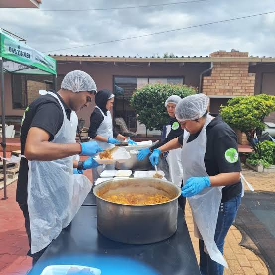
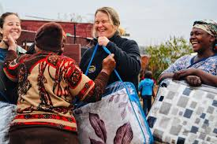
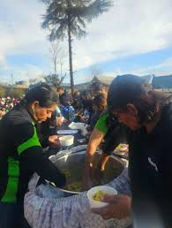
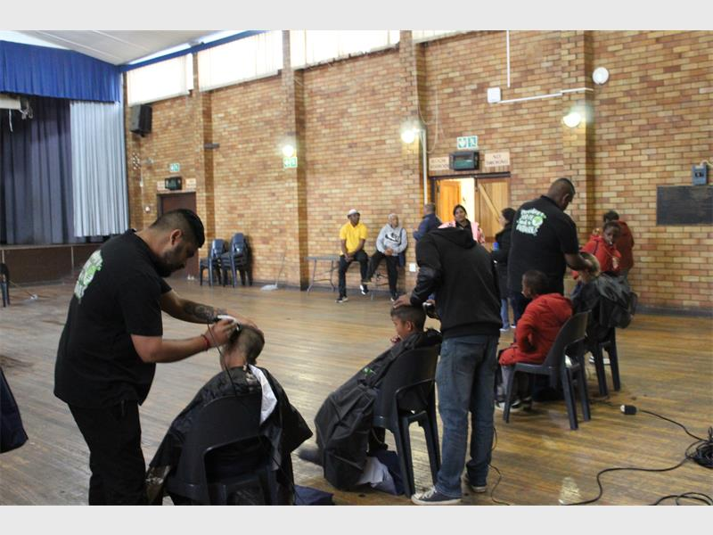
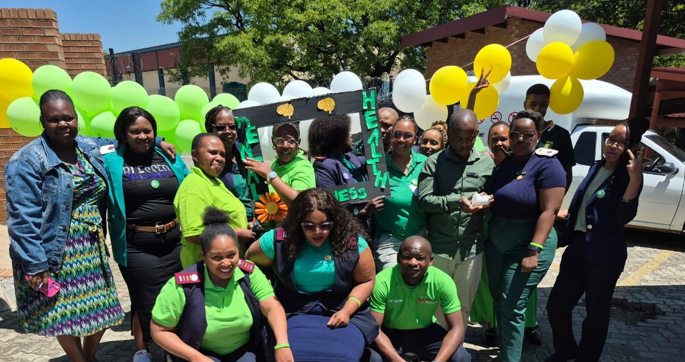

Community Support
- Food distribution
- Clothing drives
- Shelter assistance



Education
- Workshops
- Tutoring
- Mentorship programs for youth
Healthcare
- Basic medical aid
- Wellness campaigns






